About Me
I am a theoretical physicist working at Department of Physics, The Cochin College. My research focuses on various aspects of gravity, its extensions and how it could be employed in describing our cosmos, the birth, evolution and death of our Universe. I also have a strong passion for programming and computers.
Go to Another Page
News
New preprint on estimating the parameters of starobinsky inflation titled Starobinsky inflation and its spin-offs in the lights of exact solutions have appeared on arXiv.
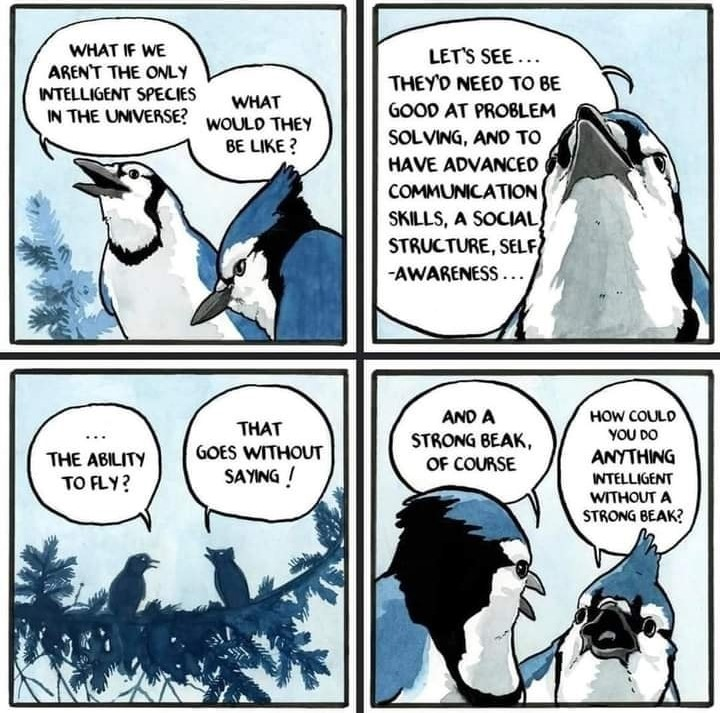
 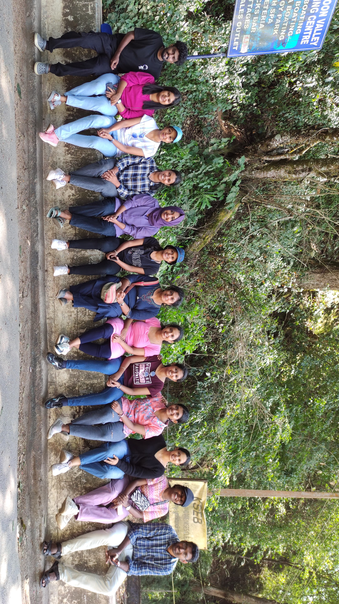
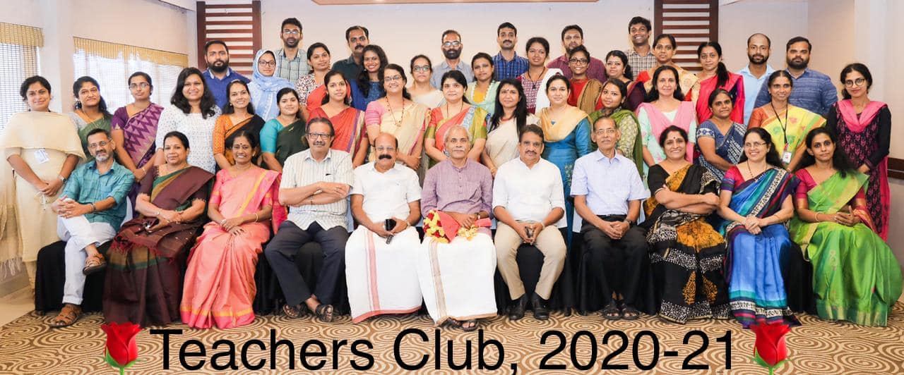
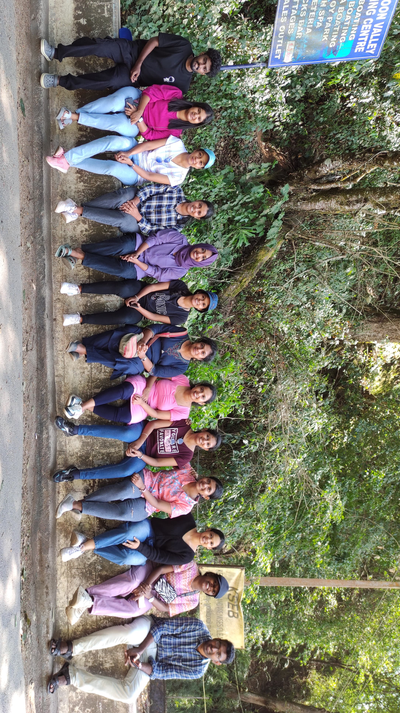
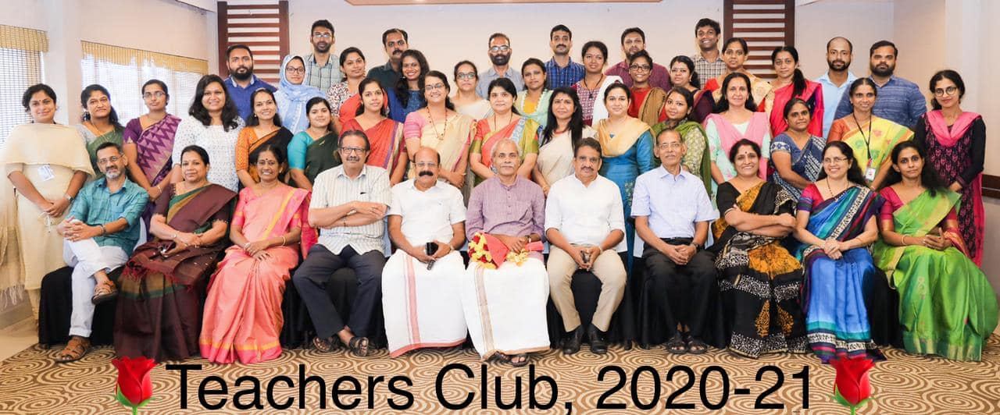
 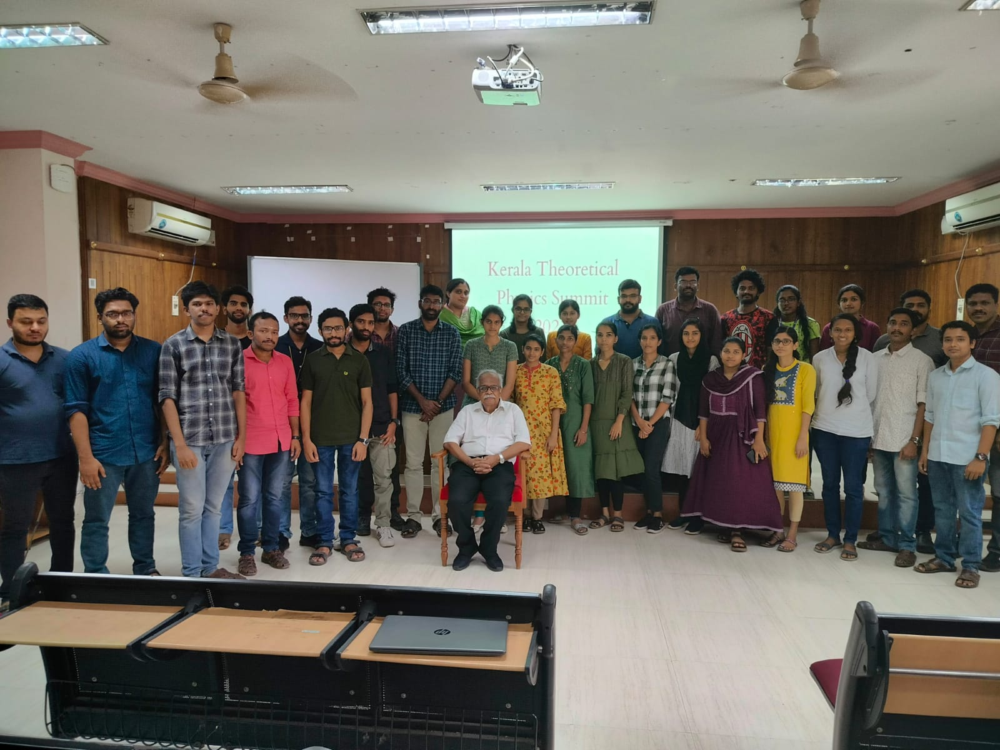
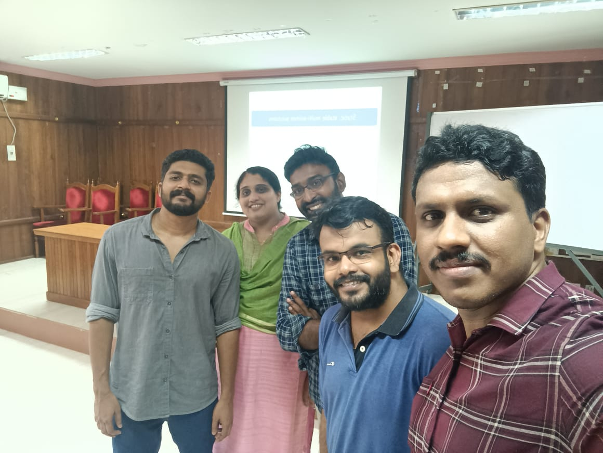
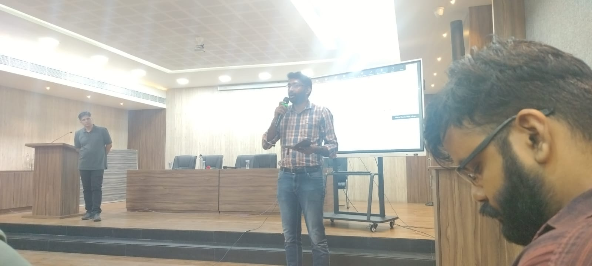
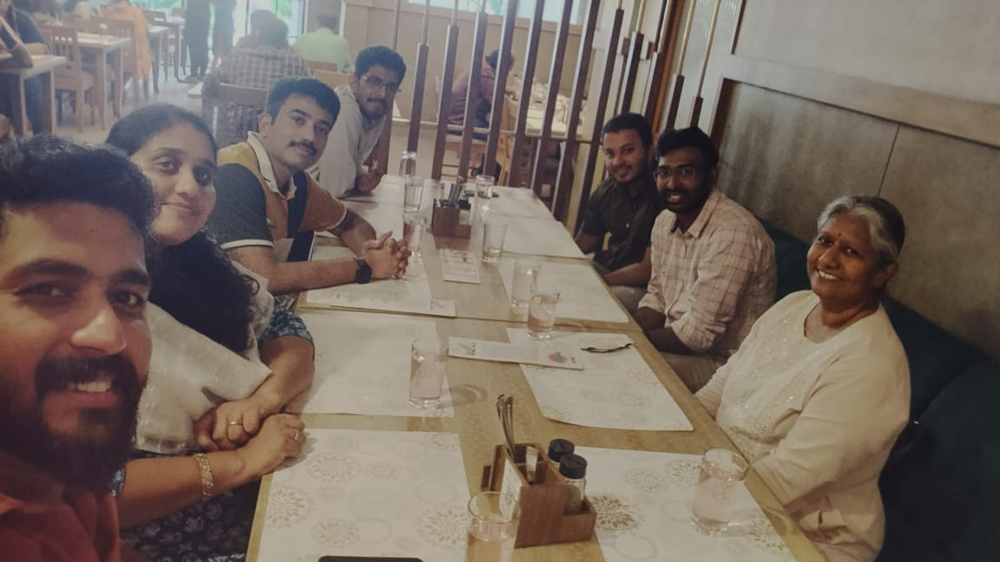
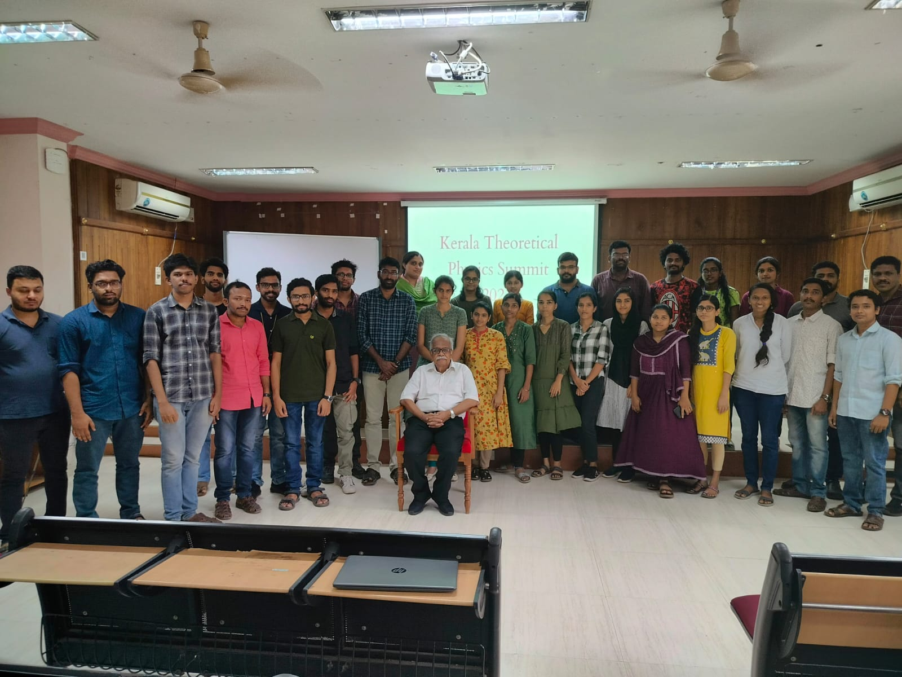
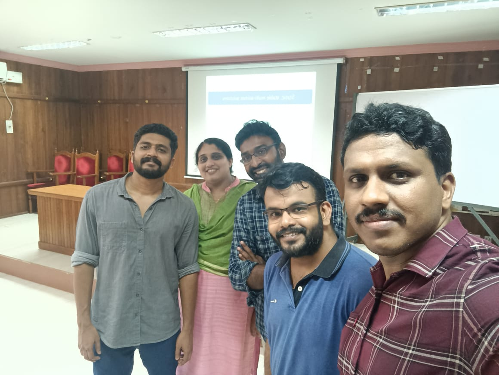
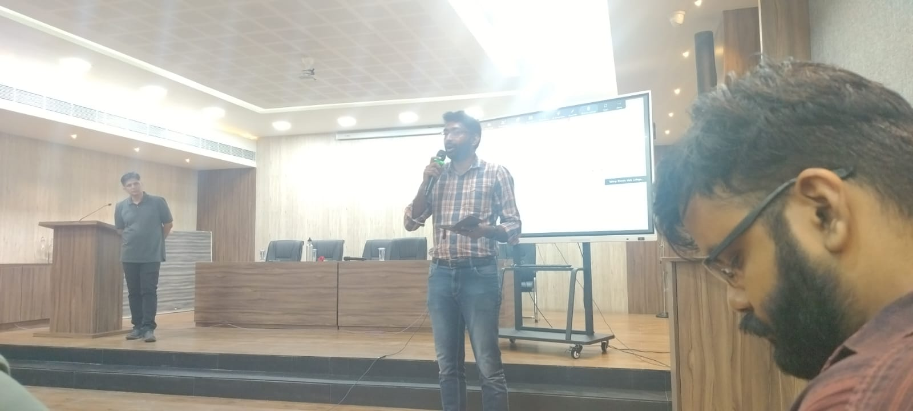
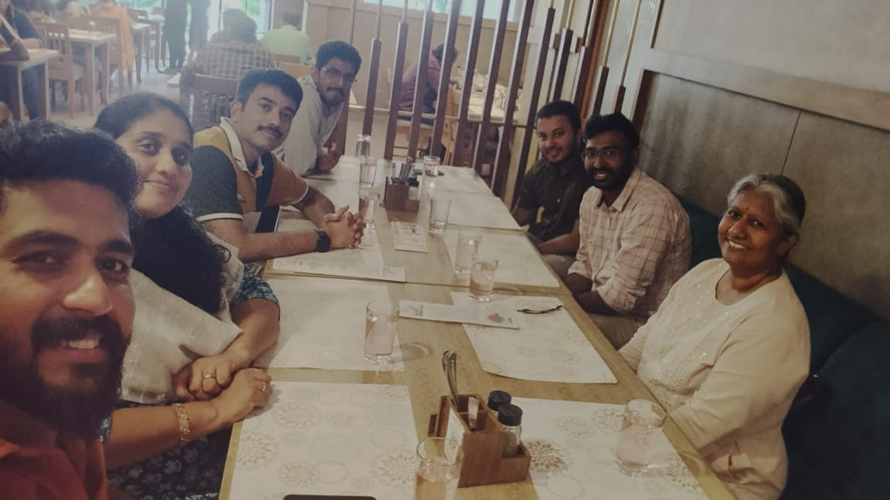